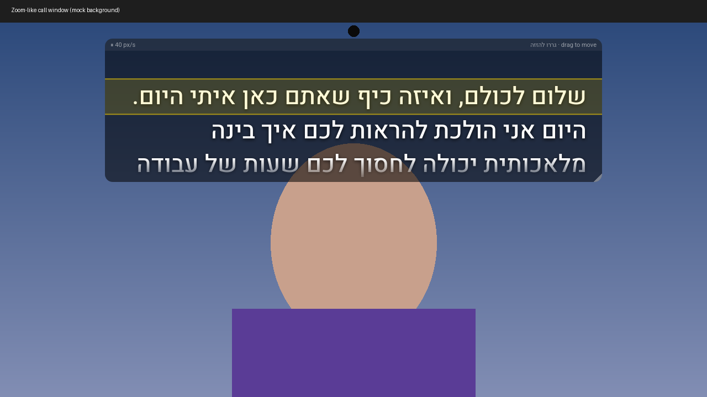

built by Shelly Or Gisser
A free, transparent teleprompter that floats over any app — Zoom, Teams, TikTok, camera-filter apps — so you read your script while looking straight at the lens. Designed to stay hidden from screen share and recordings.
⬇ Download for Android (APK)Desktop version
Screen-capture hiding depends on the device and Android version. A camera recording never includes the overlay — the camera only sees the lens, not the screen. iOS isn't supported (it doesn't allow drawing over other apps).
The desktop version is an Electron app with global hotkeys (Ctrl+Shift+Space play/pause, Ctrl+Shift+↑/↓ speed, Ctrl+Shift+L click-through, Ctrl+Shift+H hide). Installers aren't published yet — build from source:
npm install → npm start · installers: npm run dist:win / npm run dist:mac
Source & docs: github.com/PURPLEROSA/overlay-prompter
Shelly Or Gisser implements AI systems in organizations around the world, guiding companies through AI implementation and adoption.
She is an AI lecturer at the Technion and a creative partner of Google, creating AI visuals and leading “Storytelling with Gemini” workshops for Google Israel and EMEA.
She is a weekly AI commentator on Israeli TV (News 13 / Kan 11) and previously hosted her own AI-news TV segment for two years. She also serves as Head of AI at Gitam BBDO, and runs AI workshops and lectures for organizations.
Her focus: helping people understand AI products, get excited about them, and actually use them.
aigosai.com →